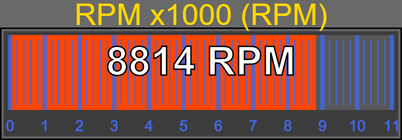

Angular directive
sra-bar-gauge source template
This widget is a generic implementation of an Bar Gauge.
All of the Bar Gauges simply use this widget by passing in the different parameters.
It is configured using the available arguments.
All arguments that take degrees, considers zero degrees at 3 o'clock.
All sizes are in pixels relative to 800x320.
If a gauge is resized, it will automatically adjust these values.
Other values, the gauge needs, are sent by the SIM to control, minimum, maximum, states, and intervals for the major,minor.
Example of how the Tachometer uses this:
<sra-bar-gauge
class = "SIMRacingApps-Widget-BarGauge-Tachometer"
data-sra-args-bar-gauge = "Tachometer"
data-sra-args-round-to = "{{sraRoundTo}}"
data-sra-args-show-value = "{{sraShowValue}}"
data-sra-args-interval = "{{sraArgsInterval||sraInterval}}"
></sra-bar-gauge>

Dependencies:
| Name | Type | Description |
|---|---|---|
| data-sra-args-bar-gauge | string | The name of the gauge that the SIM will use to send the values from. See, Gauges, for avaiLabel values. Defaults to "Generic". |
| data-sra-args-gauge-value | string | Either the "Current" or "Next" values. Defaults to "Current". |
| data-sra-args-show-digital-value | boolean | The condition, true or false, to turn the digital value on and off. The default is true. This value can be override for all gauge in the URL using "SHOWDIGITALVALUE=false". |
| data-sra-args-use-speedometer | boolean | The condition, true or false, to get the Tachometer to use the speed to determine the states relating to pit road speed. Defaults to true. If set to false, it uses the RPMs while in 2nd Gear that the SIM returns. if your app or widget implements a way for the user to set it (like in the real stock cars), then calling "/SIMRacingApps/Data/Car/REFERENCE/setRPMPitRoadSpeed/{RPM}" will set it for that session. Otherwise, it will use the default from Car.json or the car specific json files for each SIM where it can be defined by track. (NOTE: As of version 1.0, the json files have not been updated and the default is 3950.) |
| data-sra-args-label | string | The title of the bar. Defaults to the gauge's label1 and lable2 values. |
| data-sra-args-x-label | pixels | The X position of the label. |
| data-sra-args-y-label | pixels | The Y position of the label. |
| data-sra-args-font-size-label | pixels | The font size of the label. |
| data-sra-args-anchor-label | string | The anchor of the label (start,middle,end). Defaults to middle. |
| data-sra-args-start-bar | pixels | The X position of where the bar will start. |
| data-sra-args-end-bar | pixels | The X position of where the bar will end. |
| data-sra-args-major-top | pixels | The Y position of the top of the major bars. |
| data-sra-args-major-bottom | pixels | The Y position of the bottom of the major bars. |
| data-sra-args-minor-top | pixels | The Y position of the top of the minor bars. |
| data-sra-args-minor-bottom | pixels | The Y position of the bottom of the minor bars. |
| data-sra-args-border-size | pixels | The size of the border width. |
| data-sra-args-border-x | pixels | The X position of the border. |
| data-sra-args-border-y | pixels | The Y position of the border. |
| data-sra-args-border-width | pixels | The width of the border. |
| data-sra-args-border-height | pixels | The height of the border. |
| data-sra-args-major-text-y | pixels | The Y position of the bottom of the major scale text font. |
| data-sra-args-major-font-size | pixels | The size of the major text font. |
| data-sra-args-x-value | pixels | The X position of where to put the digital value. |
| data-sra-args-y-value | pixels | The Y position of the bottom of the digital value's text. |
| data-sra-args-font-size-value | pixels | The font size of the digital value. |
| data-sra-args-anchor-value | string | The anchor of the digital value's text (left,right,middle). Defaults to middle. |
| data-sra-args-round-to | double | The value to round the digital values to. Defaults to 1.0. |
| data-sra-args-decimals | integer | The number of decimals places to show the digital value. |
| data-sra-args-uom | string | The unit of measure to show the entire gauge in. |
| data-sra-args-flash-rate | milliseconds | The rate to flash when CRITICAL state is reached. |
| data-sra-args-flash-on-critical | boolean | Enable or disable the flash on critical. Defaults to true. |